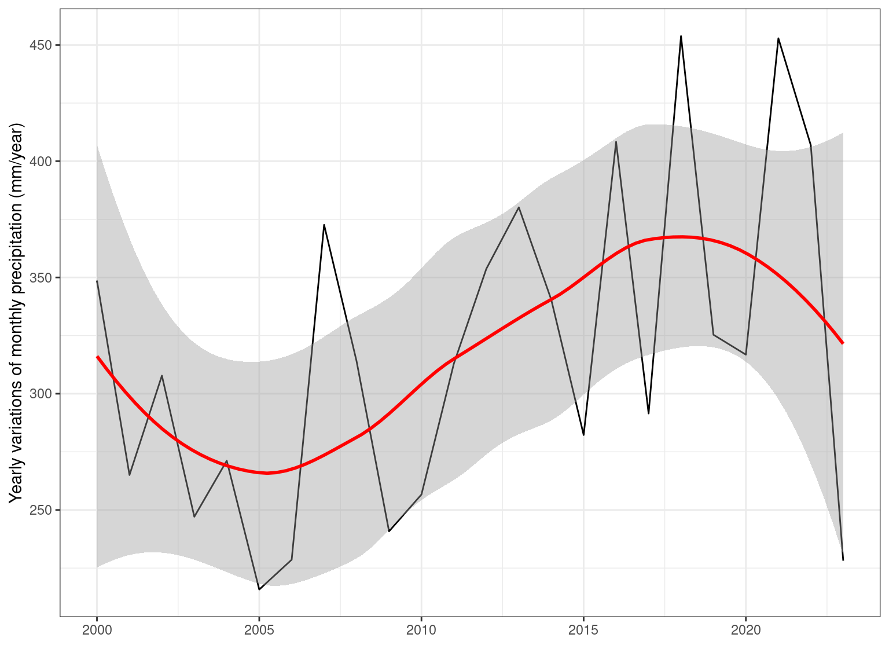
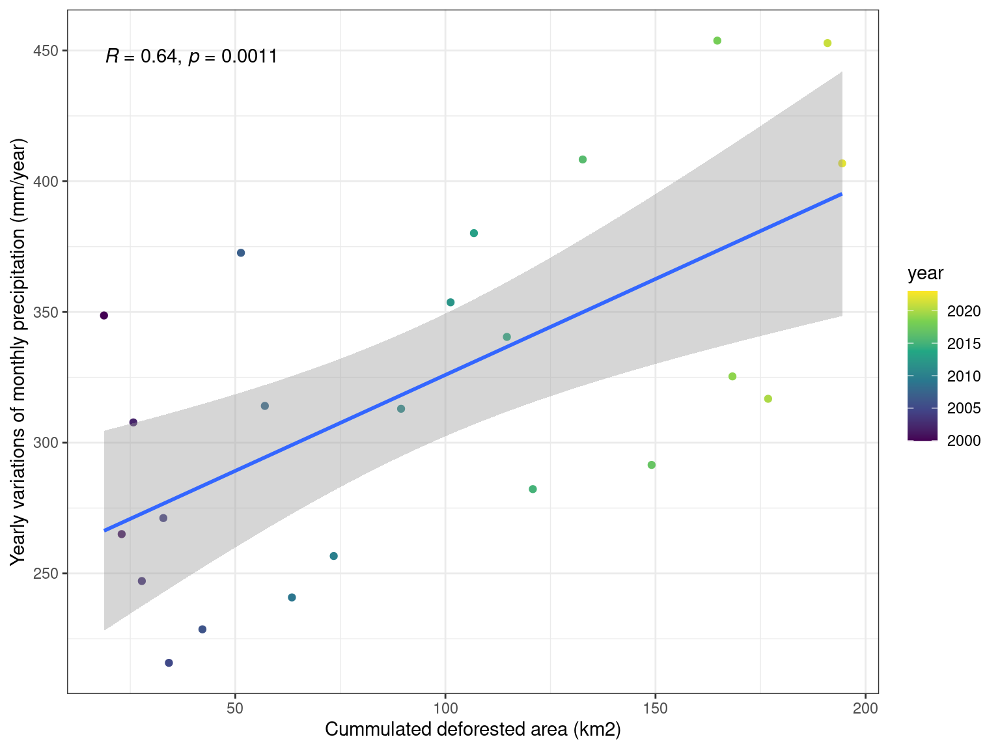
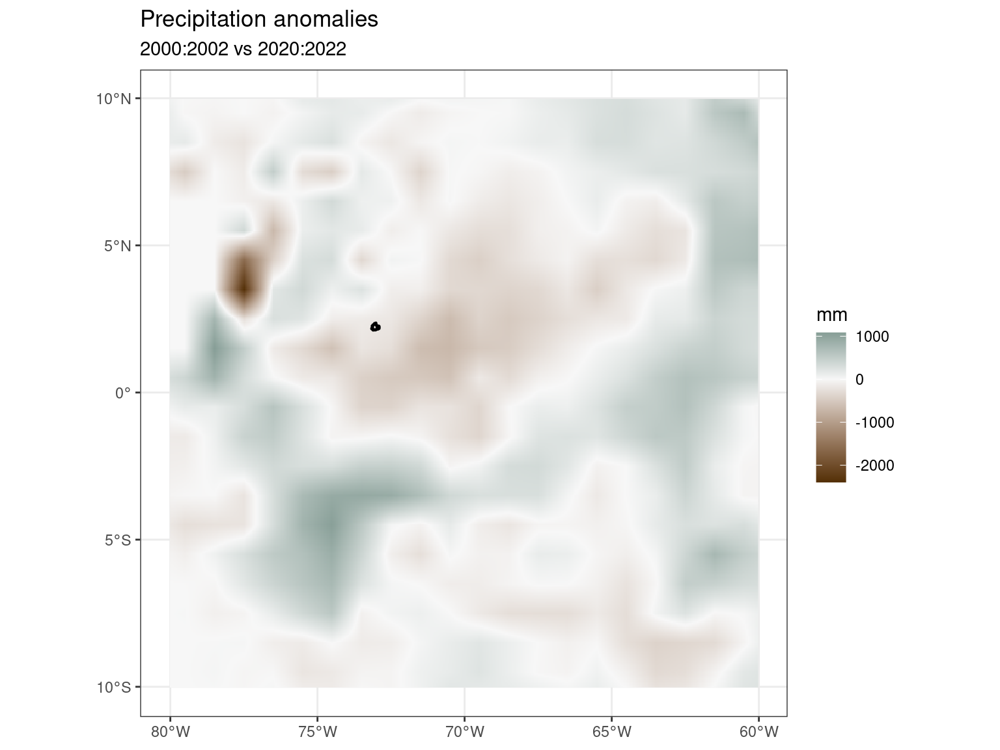
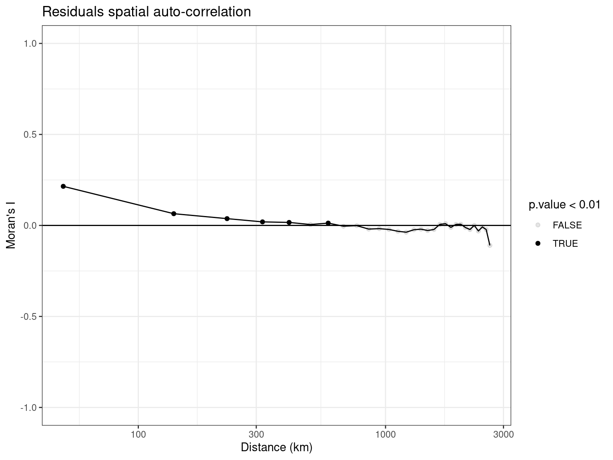

Precipitation
Capricho
We used ERA5-Land data at 0.01-degree resolution with hourly precipitation aggregated to the day.
Day

Pentad


Biweek

Month


Year


Dry season
The observed DSE is determined by the first date when the pentad mean rain rate changes from below to above the climatological annual mean rain rate of the same rainfall dataset during six out of eight pentads, and vice versa for the DSA (19). This definition captures the rapid transition from a lower to higher rainfall regime associated with the DSE, and vice versa for the DSA. The DSE and DSA are not influenced by any bias of rainfall amount, as long as the temporal patterns of the rainfall variation are not affected. Similar definitions have been widely used in the literature (18, 19, 23). For analysis of models, we modify our criterion to five out of eight pentads to best match the modeled DSE and DSA with observations. Fu et al. (2013)


Colombian Amazon
We used CHIRPS data downscaled at 0.01-degree resolution with pentad (5-days) precipitation accumulation. Yearly precipitation changes were then calculated by computing the monthly means over two periods at the end (2020 to 2022) and start (2000 to 2002) of the study period. Using 3-y averages reduces the influences of climate variability.

Comparisons
Comparing deforestation surfaces to climate anomalies seems to indicate a decrease in precipitation with increasing deforestation surfaces. But caution should be taken because of possible spatial proximity between deforested pixels that could confound with the spatial structure of climate anomalies.

Linear regressions
Classic linear regression without accounting for spatial autocorrelation found a general and significant decrease in precipitation (-240mm/year) and a significant decrease in precipitation (-81mm/year) with deforestation. However, inspecting models residuals revealed a significant spatial autocorrelation of model errors up to several hundred of kilometres questioning the robustness of the results.
| precipitation | |||
| Predictors | Estimates | CI | p |
| intact | -239.77 | -243.01 – -236.54 | <0.001 |
| deforest | -80.92 | -103.95 – -57.88 | <0.001 |
| Observations | 14050 | ||
| R2 / R2 adjusted | 0.634 / 0.634 | ||

Spatial regressions
To account for spatial autocorrelation, we took advantage of a method including spatial autocorrelation in model error (spNNGP, Gaussian univariate Bayesian spatial regression models using Nearest Neighbor Gaussian Processes, see note below). We found only a small significant effect of deforestation on precipitation decrease accounting for spatial autocorrelation (-3mm/year).